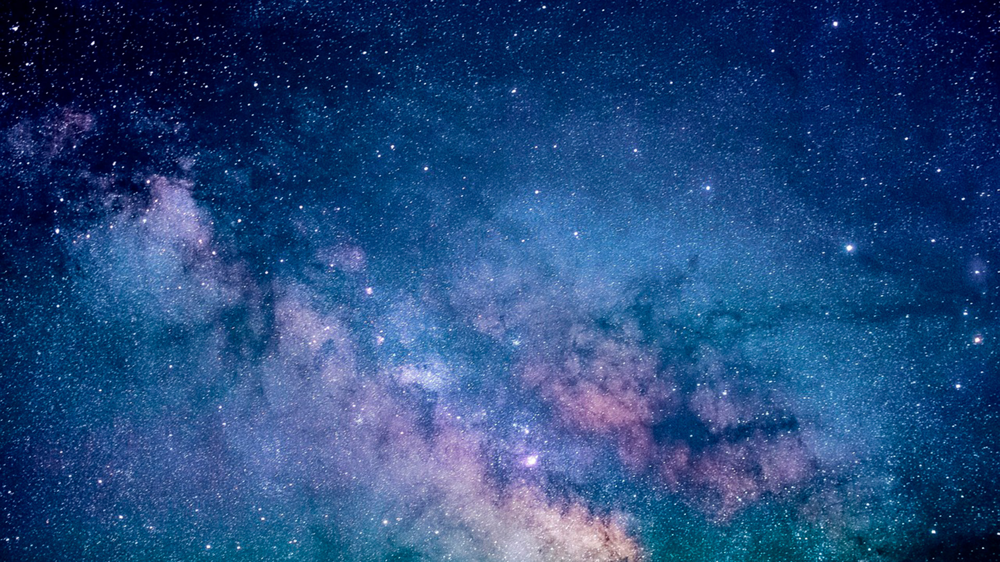
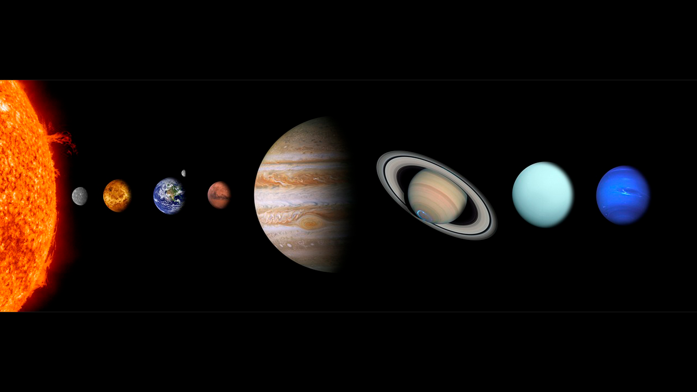
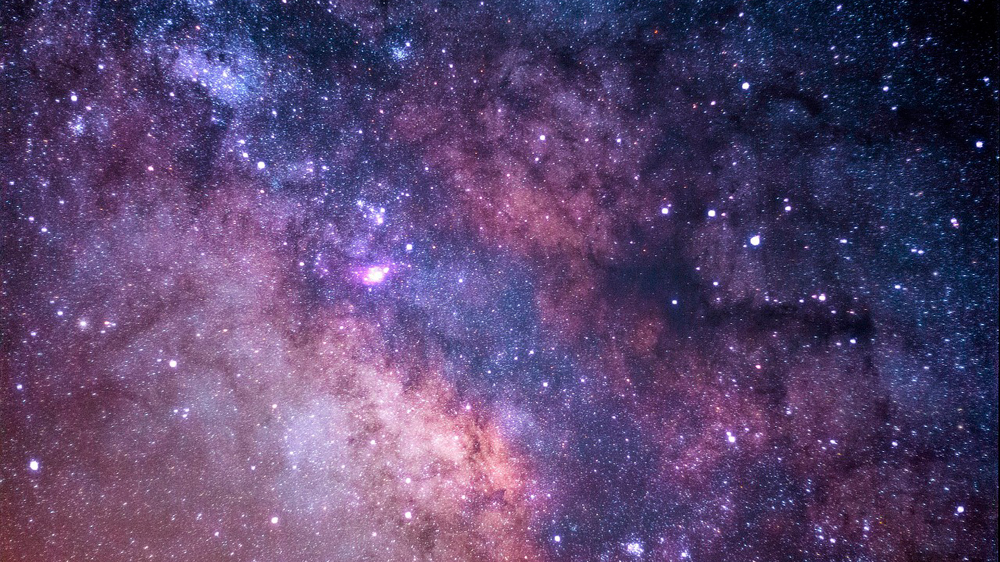
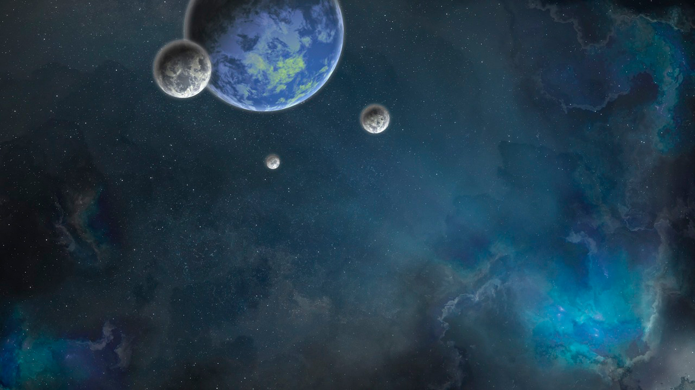
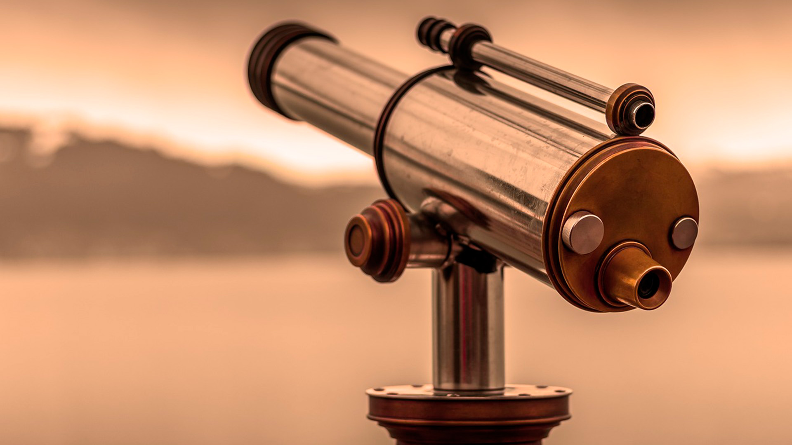

O que é astronomia?

Astronomia é o estudo científico de objetos celestes, como estrelas, planetas, galáxias e outros fenômenos que ocorrem fora da atmosfera da terra. É um ramo da ciência natural que se concentra na compreensão do universo e seus vários componentes, incluindo sua formação, evolução e comportamento. Os astronomos usam uma combinação de métodos observacionais e teóricos para explorar e explicar a vastidão de cosmos.
O que a astronomia estuda?
1 / 6

Estrelas: Os astrónomos estudam as estrelas para compreender os seus ciclos de
vida, a sua estrutura interna e as várias fases da evolução estelar. Investigam propriedades
como a massa, a temperatura, a luminosidade e a composição, bem como fenómenos como a formação
estelar, a fusão nuclear, as supernovas e os restos estelares, como as anãs brancas, as estrelas
de neutrões e os buracos negros.
2 / 6

Planetas e sistema solar: A Astronomia explora planetas, luas, asteróides,
cometas e outros objectos do nosso sistema solar. Os cientistas estudam a sua composição,
atmosferas, superfícies e interacções entre si e com o Sol. Investigam a formação planetária, os
processos geológicos, as atmosferas e o potencial de habitabilidade ou a presença de vida.
3 / 6

Galáxias: Os astrónomos investigam as galáxias, que são vastos sistemas de
estrelas, gás, poeira e matéria escura. Estudam a sua formação, estrutura, dinâmica e evolução.
As galáxias podem ter uma forma espiral, elíptica ou irregular, e podem conter buracos negros
supermassivos nos seus centros. Observar e compreender as galáxias ajuda os astrónomos a
desvendar a estrutura e a evolução do Universo em grande escala.
4 / 6

Cosmologia: A astronomia desempenha um papel crucial na cosmologia, o estudo da
origem, estrutura e evolução do Universo como um todo. Os cosmólogos investigam a teoria do Big
Bang, a expansão do Universo, a radiação cósmica de fundo em microondas, a matéria negra, a
energia negra e a distribuição em grande escala das galáxias. Procuram responder a questões
fundamentais sobre a natureza do Universo e o seu destino final.
5 / 6

Exoplanetas e Astrobiologia: Os astrónomos procuram e estudam exoplanetas, que
são planetas que orbitam estrelas fora do nosso sistema solar. O seu objectivo é identificar
mundos potencialmente habitáveis e procurar sinais de vida fora da Terra. O domínio emergente da
astrobiologia combina a astronomia, a biologia e outras ciências para explorar a possibilidade
de vida no universo.
6 / 6

Técnicas e instrumentos de observação: A astronomia envolve o desenvolvimento e a
utilização de várias técnicas e instrumentos de observação, incluindo telescópios terrestres,
telescópios espaciais, radiotelescópios e observatórios. Estes instrumentos permitem aos
astrónomos recolher dados em diferentes comprimentos de onda da luz, desde as ondas de rádio até
aos raios gama, e fazer observações e medições detalhadas de objetos celestes.